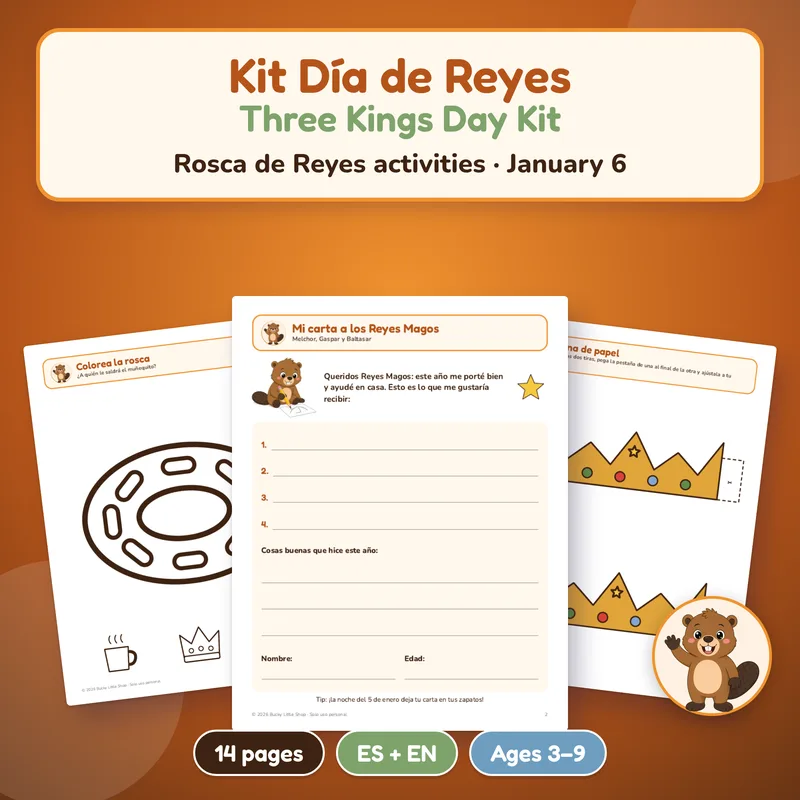
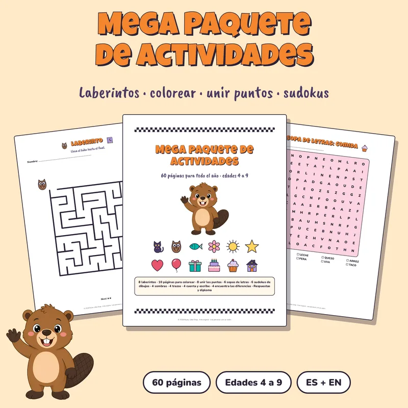
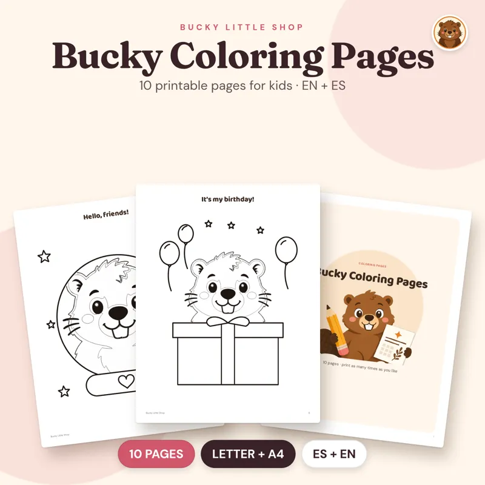
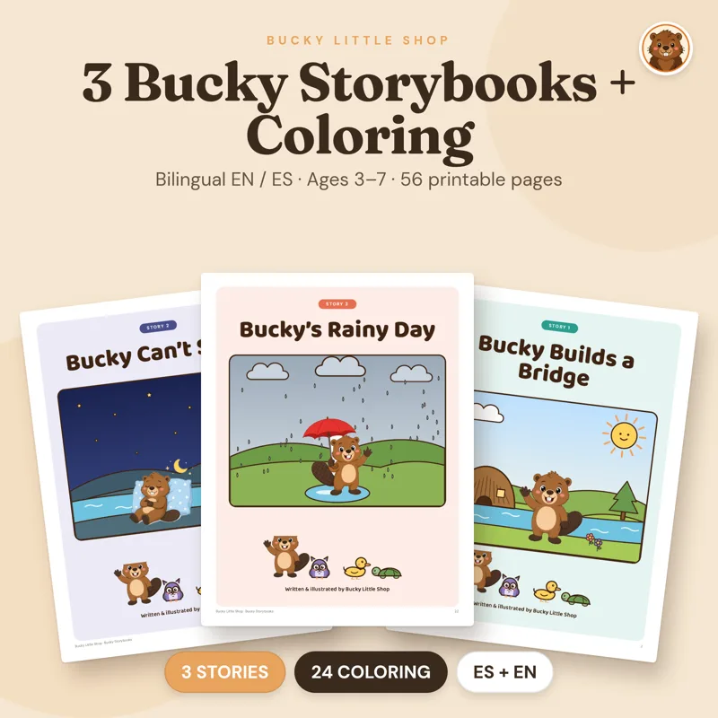
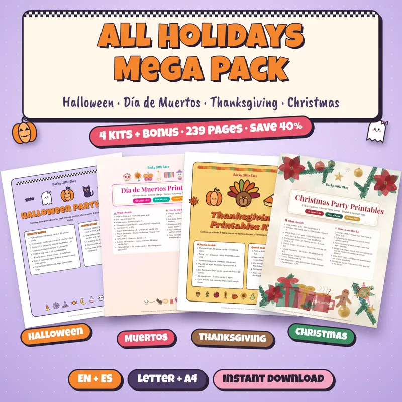

Home › Three Kings Day printables
Three Kings Day printables for Epiphany and Día de Reyes
Celebrate Three Kings Day on Wednesday, January 6, 2027 with a letter to the Kings, paper crown, coloring pages, memory game and a free mini kit to start. Instant PDFs in English and Spanish, US Letter and A4.

Bucky Three Kings Day Kit
For January 6: letter to the Three Kings with a wish list, paper crown, 3 coloring pages, word search, maze, 24-card memory game and a figurine tracker for Candelaria (Feb 2). Ages about 3 to 9. Personal use or one classroom.
$4.99 USDBuy and downloadFree Christmas Mini Kit
Free mini kit for home (personal use only): charades, Would You Rather, Christmas Scattergories, a folding card with 8 gift tags, a coloring page and a 2027 mini calendar. English and Spanish.
FREEGet it freeWhat is Three Kings Day (Epiphany)?
Three Kings Day, also called Epiphany or Día de Reyes, falls on Wednesday, January 6, 2027. In many Spanish-speaking and Christian homes, kids leave a letter for Melchior, Gaspar and Balthazar the night before, and families share a rosca de Reyes (Kings cake). Whoever finds the little figurine inside hosts tamales on Candelaria, February 2. Printable activities make the morning easy: a letter and wish list, a paper crown, coloring pages, a memory game and a tracker for who found the figurine.
What to print for January 6
- Three Kings Day kit ($4.99): 14 pages per file with a letter to the Three Kings and wish list, a paper crown (one in color, one to color), 3 coloring pages (rosca, crown, camels and the star), a word search, a maze, a 24-card memory game, a "Who found the figurine?" tracker for Candelaria and a Rosca Champion certificate, plus answer keys. Ages about 3 to 9. Four PDFs: English and Spanish, US Letter and A4. Personal use or one classroom.
- Free Christmas Mini Kit: a personal-use starter with party games, a card, 8 gift tags, a coloring page and a 2027 mini calendar, in English and Spanish. Handy for the days between Christmas and Epiphany at home.
- Kids Activity Mega Pack ($7.99): 60 screen-free pages (mazes, coloring, dot-to-dot, picture sudoku, word search) for quiet time while the rosca bakes or after gifts are opened. Ages about 4 to 9. Personal use or one classroom.
- Bucky coloring pages ($2.99): 10 thick-line pages plus a cover. Fast calm-down activity for younger kids at the table.
- Bucky Storybooks ($4.99): 3 gentle illustrated stories with discussion questions and 24 matching coloring pages, ages about 3 to 7 — a quiet Epiphany-evening read-aloud.
A simple Three Kings Day morning
- Night of January 5: print the letter and wish list; kids leave it out with a glass of water or a snack for the camels.
- Morning of January 6: cut out the paper crown, color a page, then play the memory game while the rosca is served.
- After the cake: write who found the figurine on the Candelaria tracker so you remember who brings tamales on February 2.
- Print at 100% ("Actual size"). Cardstock helps for the crown and memory cards; plain paper is fine for the letter, maze and coloring.
Looking for the Spanish-first page about the cake itself? See Rosca de Reyes. More kids activities: Christmas activities for kids. Classroom licenses: Christmas classroom printables.
¿Lo buscas en español? Mira la rosca de Reyes y las manualidades navideñas para niños.
More printables for quiet time around January 6

Kids Activity Mega Pack Printable
60 screen-free pages: mazes, coloring, dot-to-dot, picture sudoku and word search for quiet time after gifts. Ages about 4 to 9. Personal use or one classroom.
$7.99 USDBuy and download
Bucky Coloring Pages for Kids
10 thick-line Bucky coloring pages plus a color cover. Print for home or your classroom. English and Spanish, Letter and A4.
$2.99 USDBuy and download
Bucky Storybooks: 3 Stories + Coloring | Cuentos de Bucky (EN/ES Printable)
3 gentle Bucky stories (8 pages each with read-aloud text and discussion questions) plus 24 matching coloring pages. Ages about 3 to 7. Print at home. English and Spanish.
$4.99 USDBuy and download
All Holidays Mega Pack Printable Bundle
Every party from October to December, done!
$29 USDBuy and downloadQuestions
When is Three Kings Day in 2027?
Día de Reyes (Epiphany / Three Kings Day) is Wednesday, January 6, 2027. Candelaria, when the person who found the figurine traditionally brings tamales, is Tuesday, February 2, 2027.
What is in the Three Kings Day printable kit?
14 pages per file: a letter to the Three Kings with a wish list, a paper crown, 3 coloring pages, a word search, a maze, a 24-card memory game, a figurine tracker for Candelaria, a Rosca Champion certificate and answer keys. English and Spanish, US Letter and A4.
Is there a free printable to start with?
Yes. The Christmas Mini Kit is free for personal use at home: charades, Would You Rather, Christmas Scattergories, a card, 8 gift tags, a coloring page and a 2027 mini calendar.
Can I use these in a classroom?
The Three Kings Day kit and the Kids Activity Mega Pack allow personal use or one classroom. Bucky coloring pages may be printed for home or your classroom. The free Mini Kit is personal use only. The Bucky Storybooks listing is for printing at home. The Mega Pack allows personal and single-classroom use. Please don't resell or share the files.
What ages are these for?
The Three Kings Day kit fits about ages 3 to 9. The Mega Pack and coloring pages fit about 4 to 9. The storybooks fit about 3 to 7.
Is anything shipped?
No. These are digital PDFs you download and print at home or at a copy shop.
¿Prefieres en español? Mira posadas y Navidad, tarjetas navideñas gratis y ideas para intercambio de regalos.